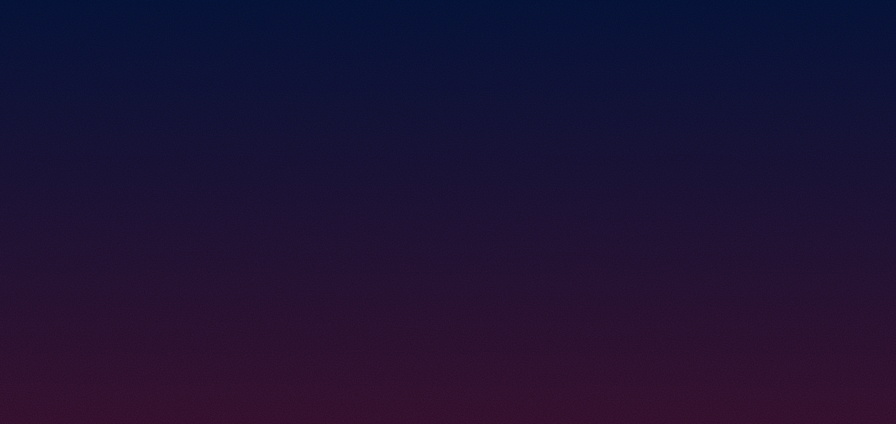
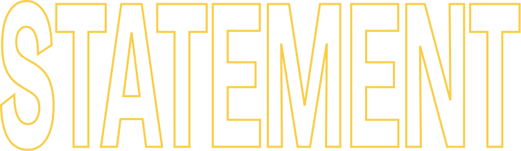

Category
Tech

Portfolio Site Main Visual

Constellate

Crafting memorable experiences through diverse technologies.
Designing interactive art that resonates with audiences.


Interactive Arts & Design
複雑なアルゴリズムやシステムを裏側に秘めつつ、表出する体験はあくまで純粋な驚きに満ちていること
技術そのものを誇示するのではなく、それが鑑賞者の感情をどう動かすかを最優先に置き、
テクノロジーと人間の間の距離を縮めるインタラクティブな表現を探求しています。